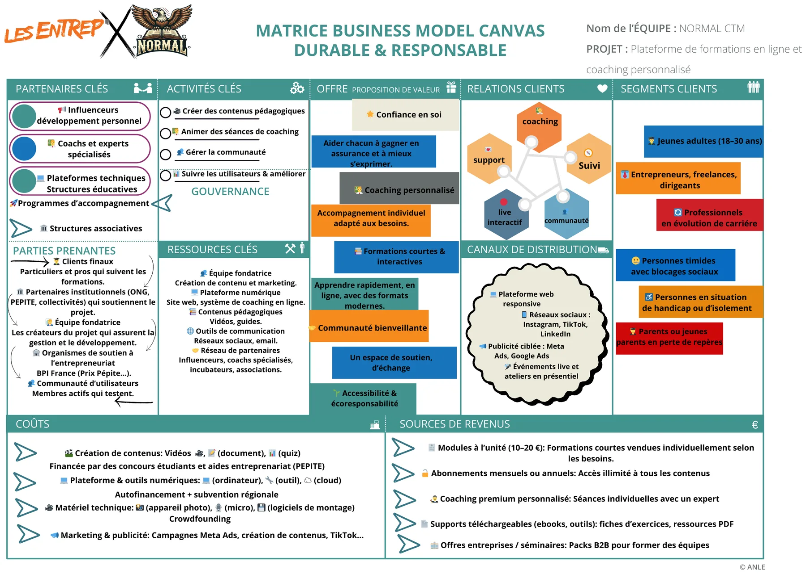

Étude de cas · BUT 2 · Les Entrep’, semestres 3 et 4
NORMAL CTM Corporation, une plateforme imaginée pour Les Entrep’
Des formations courtes en ligne et du coaching pour gagner en confiance en soi, du persona au plan de financement.
- Période
- 2024-2025, dossier final en mars 2025
- Format
- À quatre
- Domaines
- Gestion de projet, Marketing et international, Omnicanal et digital

Contexte
Les Entrep’, édition 2024-2025 : imaginer à quatre une entreprise. NORMAL CTM Corporation est une plateforme de formations courtes en ligne et de coaching pour gagner en confiance en soi.
Objectif
Construire un dossier complet de création d’entreprise.
Mon rôle
Chargé de la communication et du marketing. Deux associés s’occupaient de la plateforme et de la technique, un des contenus pédagogiques, et les décisions se prenaient ensemble.
Démarche
- Business model canvas
- Persona
- SWOT
- Mix marketing
- Plan de financement
- Enquête de terrain et persona
- Business model canvas durable et responsable
- Mix marketing : modules de 10 à 20 € avec des tarifs solidaires
- Communication centrée sur l’impact humain : storytelling, témoignages, lives, sur Instagram, TikTok et LinkedIn
- Plan de financement et trésorerie sur trois ans
- Partie juridique : marque à déposer à l’INPI, droits d’auteur, accords de confidentialité
Résultats
Dossier final rendu le 23 mars 2025 : un besoin de départ de 11 000 €, un chiffre d’affaires prévu de 15 000 € la première année puis de 30 000 €, et une société par actions simplifiée à quatre associés à parts égales.
DocumentsDossier finalPDF
Avec le recul
Deux prix coexistent dans le dossier : 500 utilisateurs rapportent 7 500 € dans la prévision de ventes, mais 15 000 € dans la trésorerie. Je recouperais aujourd’hui chaque chiffre d’une partie à l’autre.
Visuels
Extraits des documents du projet, anonymisés. Cliquez sur une image pour l’agrandir.


Compétences mobilisées
- AC21.01Intégrer les champs de connaissances transversaux au projet
- AC21.02Évaluer les risques de tout ou partie d’un projet
- AC21.03Chiffrer tout ou partie d’un projet
- AC21.06Participer à l’élaboration de la communication du projet
- AC23.02Élaborer le mix produit – prix – distribution – communication
- AC25.01Définir une politique de distribution conforme à la stratégie de l’organisation pour développer sa clientèle
- AC33.03Communiquer efficacement en deux langues étrangères pour réaliser des tâches associées
Retour
Tous les projets